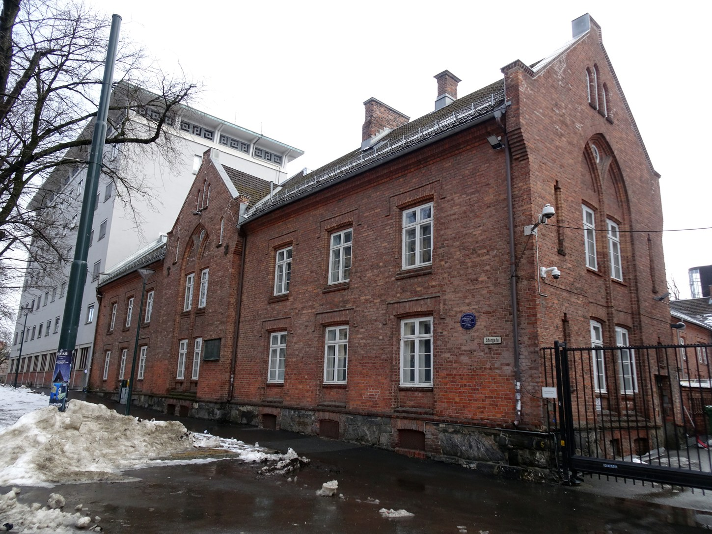

A CONTINUING CULTURAL READER
從影集，走進一座城市。
《劇中所見》以影集為入口，閱讀場景所在的歷史、地理、人與社會制度。每一期聚焦一部作品；照片、地圖與資料，讓故事延伸到銀幕之外。
現正刊載：挪威影集《急症最前線》——從奧斯陸的急症中心，理解照護制度如何走進日常。
文章索引

挪威・奧斯陸
《急症最前線》
奧斯陸的取景地與急症醫療制度：三個地址、一條急症專線，與等待如何成為公共議題。
NEXT ISSUE
下一篇文章正在準備中。它也許從一張歷史照片、一段年代，或一位人物開始。